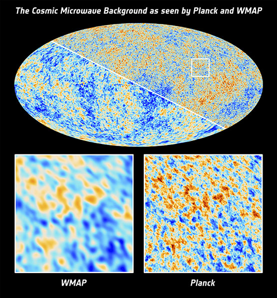
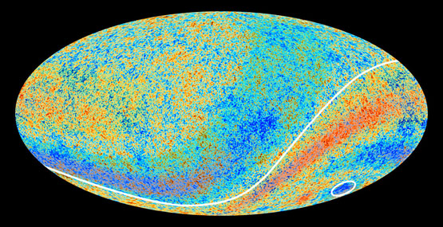

李淼 发表于 2013-04-11 18:30
本文作者:李淼

当地时间2013年3月21日，欧洲航天局公布了普朗克空间望远镜在15个月内拍摄的图像。这些图像可证明宇宙起源于大爆炸的理论，但图像也包含了与宇宙学标准模型的一些成分相抵触的细小差异，例如被认为激发了大爆炸的“暗能量”比以前所知的要少。 图为普朗克卫星与上一代卫星WMAP探测结果的精度对比。图片来源：欧洲空间局
没有什么谜语比写在天上的更加巨大了。我们的宇宙存在了多长时间？它由什么组成？宇宙中的结构是怎么一步一步地形成的？这些不同的能量成分的起源是什么？最后，时间和空间的本质是什么？
最近欧洲航天局的普朗克卫星让我们更加接近了这些巨大谜语的答案。
最近十年来，宇宙学家掌握的宇宙的细节超出了过去整个宇宙学史所掌握的，几乎可以给出一个精确的宇宙进化史，只剩下不多的细节了。各种不同的天文学观测手段对我们的知识做出了贡献，宇宙学家尤其喜欢谈论WMAP，这是一个在太空中观测宇宙中无所不在的射电信号的航天器。
这两年，大家的注意力和谈话内容转移到了欧洲发射的普朗克卫星，这颗卫星的寿命虽然比WMAP短，但造价更高，能力更强。2013年3月21日，欧洲航天局和普朗克卫星科学工作组第一次发布了研究成果，全世界的宇宙学家正忙于解读这些成果。
最初的宇宙学
哥白尼伽利略牛顿解开太阳系之谜之后，天文学家和物理学家是上世纪才慢慢解开宇宙之谜的。
哈勃等人先发现银河系不是整个宇宙，后来，哈勃又发现银河系之外的遥远的天体相对我们作退行运动。哈勃用类似的方式发现了河外星系和宇宙膨胀，但他得出的宇宙膨胀速度比现在大了近十倍，这和当时测量距离的粗糙方式有关。即使测量非常不准确，但不妨碍他的定性结论的正确性：远离我们的星系相对我们的退行速度与距离成正比。
自然，理论家总是历史中的先知。在哈勃发现哈勃定律之前的十年，第一代宇宙学家在爱因斯坦的时空理论的基础上发现了宇宙膨胀的规律，亚历山大·弗里德曼在1922年从爱因斯坦方程解出宇宙膨胀解，1927年，工程师兼神父勒梅特也发现了膨胀宇宙解，他干脆建议宇宙起源于一个原初“原子”，起源于这个原初“原子”的大爆炸。勒梅特的理论非常接近宇宙学的现代理论了。
当然，最先研究宇宙学的还是爱因斯坦，可惜他引进了一个静态宇宙，为了这个静态宇宙，他还引进了“宇宙学常数”，这个常数现在普遍被称为暗能量，因为在爱因斯坦那里，这个常数就是真空能量，在现代宇宙学理论中，这个能量可能更加复杂，不只是一个常数。它是不是常数，现在还是一个巨大的难题。
大爆炸理论
在更大的尺度上，宇宙虽然在膨胀，但天体的退行速度不严格遵循哈勃定律。宇宙的膨胀速度与宇宙中的能量组成有关，例如，普通物质使得宇宙膨胀的速度慢慢变慢，而暗能量会引起无所不在的斥力，使得宇宙膨胀的速度慢慢变大。当然，由于爱因斯坦的时空理论，不论在哪种情形，非常遥远的天体的退行速度不严格与距离成正比，宇宙学家有一整套公式可以用来计算这些退行速度。
正是由于我们对理论的熟知，导致1990年代末发现暗能量，此时，哈勃用的造父变星已经不够用了，天文学家用非常遥远的超新星确定了宇宙膨胀的速度在加速！这个发现震撼了整个天文界和物理界，发现的三个主要人物在2011年获得诺贝尔物理学奖。
在发现宇宙加速膨胀之前，物理学家早就建立了当时认为的成熟的宇宙学。这个宇宙学理论认为，我们的宇宙起源于一个发生在大约一百亿年前的大爆炸。在发生大爆炸的时候，宇宙还很小，物质密度异常高，也没有天体，只有一锅等离子原始电浆，里面什么粒子都有。
这个理论是伽莫夫等人在1948年就提出来的，他们预言了几个轻元素在宇宙中的丰度，还预言了宇宙中无所不在的射电波，后来被称为宇宙微波背景辐射。直到1964年，这些射电波才偶然被新泽西州的一架天线接收到，接收到电波的两位物理学家虽然打算用射电研究天文学，却压根没有想到大爆炸宇宙学。
虽然伽莫夫的同伴阿尔法等人足够先知，他们计算的宇宙微波波长还是稍稍短了些，或者说，温度稍稍高了些，大约是5开尔文（高出绝对零度5度），实际发现的温度是2.7开尔文，与普林斯顿大学物理学家迪吉（Robert Dicke）的计算很接近。当我们说微波辐射有温度的时候，就是说这些微波射电就像来自一个烧热的炉子，特点是射电在每个方向都有，而且波长有一定的分布。这些微波射电是一百多亿年前发生的那场大爆炸的遗迹。
更加详细的历史是这样的，当宇宙中充满各种各样的粒子时，光子也在其中，它们的温度都是一样的。这锅电浆的温度随着宇宙膨胀慢慢冷却，当温度降低到大约三千度时，电浆中的电子和原子核就复合成原子，它们不再阻碍光子了，宇宙变得透明，那时，宇宙的大小只有现在的一千分之一，年龄大约是38万年。38万年与现在的年龄138亿年相比，大约是两秒钟与一天相比。宇宙变得透明之后，物质和光子就各管各的，光子慢慢冷却变成现在的宇宙微波背景辐射，温度也从三千度下降到现在的2.7255开尔文。
爱因斯坦是现代宇宙学之父。图片来源：wordpress.com
大爆炸之前还有大爆炸
当我引用2.7255这个数字的时候，其实我是在引用普朗克卫星最近发布的数据。要了解普朗克卫星到底做了什么，我们先从这颗卫星的“祖父”COBE谈起。
COBE是微波背景辐射探险者的简称（Cosmic Background Explorer），是美国航天局在1989年发射的专门用于探测宇宙大爆炸遗迹微波射电的卫星。这颗卫星早在1977年就计划发射了，这比我上大学还早了一年，1981年开始制造，也比我大学毕业读研究生早了一年，但它探测的科学结果要等到1992年才能得到，那时，我已经在加州大学做博士后了。
美国人为什么制造和发射这颗卫星?其实，在制造这颗卫星的前一年，宇宙学家阿伦·古斯提出了一个异想天开的理论。他觉得，宇宙微波背景辐射在我们能够看到的巨大的宇宙中的均匀性需要一个理由，而这个理由不包含在宇宙大爆炸理论中。在宇宙大爆炸之前，应该还有一个更大的爆炸，持续时间非常短，比任何不稳定基本粒子的寿命都要短，比如说，大约只持续了10-34秒或稍长，在这个不可思议的短时间之中，宇宙的大小膨胀了至少1026倍。由于这种巨大的膨胀，即使宇宙本来不均匀，膨胀之后也变得均匀了。
这个理论上的极短时间叫做暴涨期，它解释了宇宙为什么是均匀的。当然，虽然微波背景辐射很均匀，宇宙的其他能量如物质并不均匀，我们能够看到太阳系以及其他无数颗恒星，由上千亿颗恒星组成的银河系以及类似银河系的其他星系，这些结构是怎么来的？非常好玩的是，在COBE的建造过程中，物理学家用古斯的理论做了计算，发现暴涨期正好也可以解释这些结构的起源，同时还预言了微波背景辐射有微小的不均匀性。
COBE发现了微波背景辐射的不均匀性，这些微小的不均匀性非常小，只有十万分之一左右，这就像我们坐在飞机上看大海，大海的表面基本上是平的。COBE的发现非常重要，它暗示宇宙在大爆炸之前还发生过更加不可思议的大爆炸，后来的大爆炸只不过是更加剧烈爆炸的延续。COBE的发现后来在2006年被颁发了诺贝尔物理学奖。
更多的细节
COBE带来的成功鼓舞了美国的物理学家和天文学家，紧接COBE的成功，他们在1995年建议再发射一颗卫星，目的还是探测微波背景辐射的不均匀性。
为什么还要发射一颗？这是因为，既然微波背景辐射在宇宙只有38万年大的时候就存在了，它一定含有宇宙历史的重要信息，既然它的不均匀性是宇宙在开端的极短时期留下的，它同时也带着宇宙起源的信息。COBE虽然发现了不均匀性，但数据实在粗糙，就像一张聚焦不好的婴儿照片，我们从照片可以判断这是个婴儿，但我们还说不好他到底长得如何，所以要再发射一颗性能更好的卫星去拍一张更加清晰的照片。
当然，拍照片只是一个比喻，真正的观测要复杂得多。COBE的继承者叫WMAP，与COBE不同的是，它远离地球达150万公里（比月亮远多了，月亮距地球的平均距离是38万公里）。这颗卫星2001年发射，经过一个复杂的路径旅行了三个月到达了指定地点。与这颗卫星有关的科学家小组非常努力，几个月之内就分析了卫星传回来的第一年观测数据，在2003年2月就发表了科学结果，从此，很多宇宙学家就围绕WMAP卫星的结果工作了将近十年，包括我自己。我在2003年6月就发表了一篇理论论文，解释其中的一个观测结果。WMAP的有效观测时间长达9年，帮助我们弄清了很多宇宙历史的细节。
前面我们提到，WMAP卫星被送到远离地球150万公里的地方，为什么要这么远？因为，我们希望WMAP能够精确测量宇宙微波背景辐射的微小不均匀性，这就需要排除很多干扰，特别是来自太阳的干扰。如果卫星能够在地球的掩护下绕着太阳运动，并且与地球同步，这个目的就容易达到。正好，在离地球150万公里的地方，有这么一个点，在那里，卫星可以与地球同步绕着太阳转，同时躲在地球的后面。COBE因为在地球轨道上运转，测量精度也不算高，花费只有数千万美元，而WMAP的花费达到一亿五千万美元。

普朗克卫星证实了宇宙“邪恶轴心”和大暗斑的存在。“邪恶轴心”是指，宇宙微波背景辐射的平均温度在某个半球（曲线左上侧）要比另一个半球（曲线右下侧）略低一些，而“标准模型”预言，不论朝任何方向看去，宇宙都应该大致相同才对。南半球还有一块冷斑尺度远远大于预期（右下圈出部分），同样无法用“标准模型”来解释。图片来源：tumblr.com
更精确的结果
欧洲航天局也早在1990年代就准备造一颗类似WMAP的卫星，用著名物理学家普朗克命名，在WMAP的观测进入尾声的时候发射。这颗卫星最后造价达到空前的七亿欧元，在2009年发射。
普朗克从2009年8月开始扫描全天空的射电信号，包括古老的微波背景辐射，来自我们银河系的射电，河外活动星系核发出的射电以及红外光，我们的太阳系中各种天体的射电辐射。欧洲人的技术完全超出了我们的想象，本来他们计划让这颗卫星的全波段扫描工作一年半，结果工作时间是预期的时间的两倍多。2012年1月13日，卫星上用于冷却的氦3才被用完，一些观测不得不结束，现在，这颗卫星还在用不需要高度冷却的低频部分观测。
刚刚公布的结果证实了WMAP的观测，精度更高了。例如，宇宙年龄是138亿年，组成恒星、星系和星系间的物质占4.9%，而更多的则是看不见的暗物质，占26.8%，导致宇宙膨胀加速的暗能量占68.3%，而我们用来分析宇宙史的微波辐射仅仅占总能量的万分之一不到。以上这些数字都与WMAP给出的数字稍有不同，我们不能小看这些些微的不同，也许，结合其他天文观测手段，新数字将会给我们带来意想不到的结果，例如，也许暗能量像其他宇宙中的能量组成一样，是变化的。
“邪恶轴心”
是不是可以说，普朗克卫星除了更加精确，并没有任何新的发现呢？当然不能这么说。普朗克卫星似乎确定，宇宙存在一个“邪恶轴心”。在这个邪恶轴心的两边，宇宙微波背景的涨落稍有不同，难以用宇宙学家设计的“标准模型”来理解。另外，在南半球，似乎存在一个大冷斑，同样无法用“标准模型”来解释。魔鬼在细节中，对这些反常细节的研究，或许将揭示关于宇宙更加惊人的秘密。
我总觉得，“邪恶轴心”存在的理由，一定超出了即使是宇宙学家的想象力，而给科幻作家提供了素材。
普朗克卫星刚刚公布了15.5个月的观测结果，它的全波段观测用了29个月，所以还有一半的数据等着分析。另外，对于宇宙学专家们更为重要的是，普朗克还没有公布对射电信号偏振的分析，这些分析可能会告诉我们在那个极短的暴涨期宇宙到底发生了什么。
本文授权转载自@李淼 在《南方周末》上发表的文章。